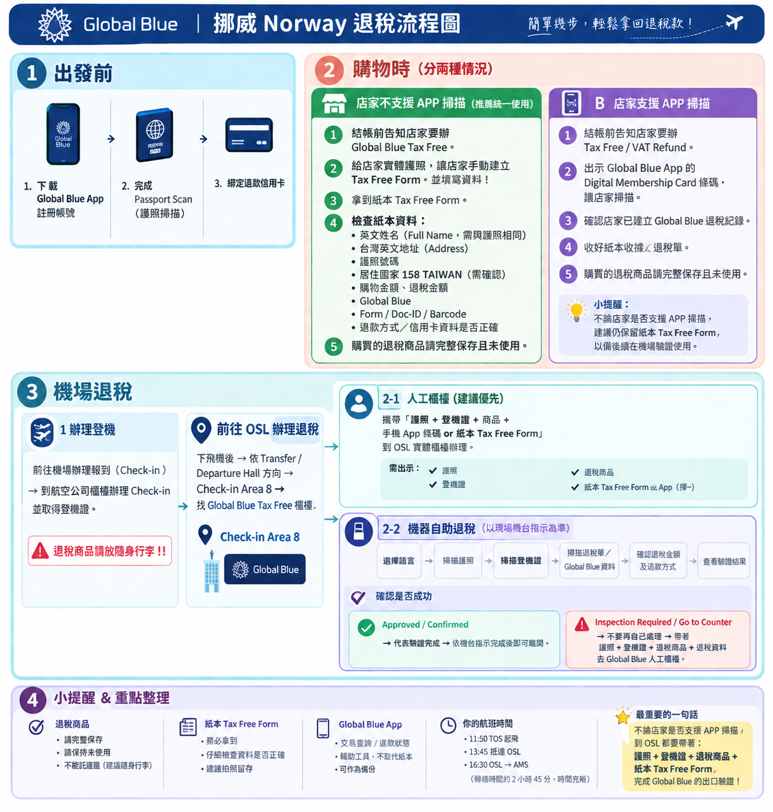
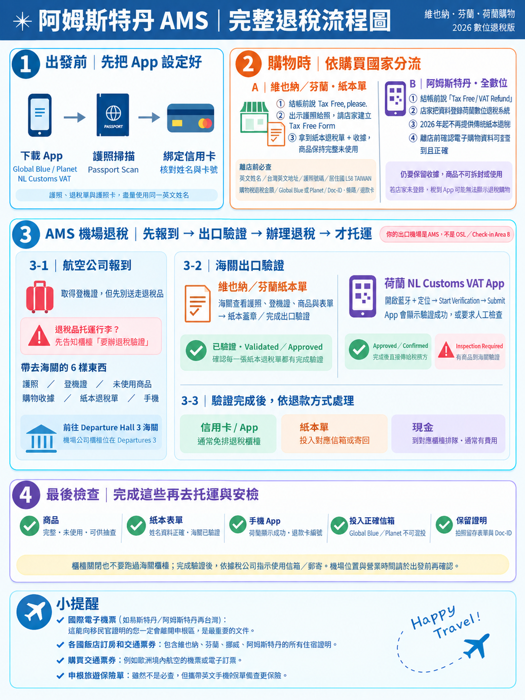

🧾
四國購物，實際只在兩個機場辦退稅10/8 OSL＝挪威；10/10 AMS＝奧地利＋芬蘭＋荷蘭。驗貨前不要把需要查驗的退稅商品先托運。
退稅總覽
🇦🇹 奧地利10/10 AMS｜EU Tax Free Form
🇫🇮 芬蘭10/10 AMS｜EU Tax Free Form
🇳🇴 挪威10/8 OSL｜依退稅商辦理
🇳🇱 荷蘭10/10 AMS｜NL Customs VAT
團員只要記：OSL＝挪威；AMS＝奧地利＋芬蘭＋荷蘭。
✅ 出發前完成
- □ 安裝 Global Blue – Shop Tax Free App
- □ 完成 Global Blue Passport Scan
- □ 建立 Digital Membership Card
- □ 綁定固定使用的退款信用卡
- □ 安裝 NL Customs VAT App
- □ 完成 NL Customs VAT 帳號／護照設定
- □ 確認護照英文姓名與退稅資料完全一致
- □ 準備專用退稅文件袋
- □ 文件分成「奧地利／芬蘭 EU」、「挪威」、「荷蘭」三區
- □ 決定全程固定使用哪張信用卡收取退款
- □ OSL／AMS 退稅流程圖存入手機
- □ 流程圖另印紙本備份
- □ 全員確認：海關驗證完成 ≠ 退款已入帳
🛍️ 購物時｜每次都做
- □ 結帳前先問是否提供 Tax Free／VAT Refund
- □ 確認已達當地退稅最低門檻
- □ 由實際辦理退稅的人出示自己的護照
- □ 核對姓名、護照號碼、購買日期、金額與商品資料
- □ 確認退稅商 Logo：Global Blue／Planet／PIE VAT／其他
- □ 索取並保存收據＋Tax Free Form／數位紀錄
- □ 退稅商品保持未使用狀態並保留包裝／吊牌
- □ 每晚拍照備份收據、Tax Free Form 與條碼
- □ 每晚將文件放回正確國家的資料袋
🇳🇱 荷蘭特別注意結帳當下確認店家已完成數位登錄，並在 NL Customs VAT App 確認交易
🌍 四國購物門檻快速看
🇦🇹 奧地利單張發票超過 €75｜AMS
🇫🇮 芬蘭同店同張收據 ≥ €40｜AMS
🇳🇴 挪威依合作退稅商門檻｜OSL
🇳🇱 荷蘭同店同日 ≥ €50｜AMS
🇦🇹 奧地利＋🇫🇮 芬蘭｜先保存，10/10 AMS 統一辦
- □ 購物時完成 Tax Free 文件
- □ 保存原始收據＋Tax Free Form
- □ 商品保持未使用，方便 AMS 海關查驗
- □ 文件放入「奧地利／芬蘭 EU」資料袋
- □ 不使用 NL Customs VAT App 處理奧地利／芬蘭商品
🇳🇴 10/7 晚上｜準備挪威退稅
- □ 集中所有挪威退稅商品與退稅文件
- □ 每張單據先確認 Provider：Global Blue／Planet／PIE VAT
- □ 準備護照與 OSL → AMS 登機證
- □ Global Blue 使用者確認 App／條碼可正常開啟
- □ 商品保持未使用且可隨時拿出供查驗
- □ 查驗完成前不要把需要驗貨的商品放進拿不到的托運行李
🇳🇴 10/8 OSL｜挪威退稅
TOS → OSL 11:50–13:45；OSL → AMS 16:30–18:25。抵達 OSL 後，先看退稅單上的 Provider Logo，不要把所有退稅單都當成 Global Blue。
🔵 Global BlueDeparture Hall｜Check-in Area 8｜安檢前
🟠 Planet依 OSL 現場／退稅單指示前往對應櫃位
🟣 PIE VAT依 OSL 現場／退稅單指示前往對應櫃位
操作：護照＋OSL→AMS 登機證＋退稅單／App＋未使用商品 → 完成出口驗證 → 需要時出示商品 → 選信用卡退款 → 保存追蹤資料 → 前往 AMS 登機門。
OSL 挪威退稅 reference 流程圖

⚠️ OSL 退稅後進入荷蘭
挪威不是 EU。OSL 辦完退稅後，你們仍會先飛進荷蘭；若個人在挪威購買高價商品，仍要留意進入 EU 時的旅客免稅額與申報規則。
🇳🇱 10/9｜荷蘭購物
- □ 結帳前詢問 Tax Free
- □ 出示護照
- □ 確認店家當下完成數位退稅登錄
- □ 開啟 NL Customs VAT App，確認交易已出現
- □ 若交易沒有出現，當場請店家確認，不要離店後才處理
✈️ 10/10 AMS｜奧地利＋芬蘭＋荷蘭
🇳🇱 荷蘭商品NL Customs VAT App 數位驗證
- □ 開啟 NL Customs VAT App
- □ 開啟 Bluetooth＋定位服務
- □ 到海關區域附近，在 App 申請 Validation
- □ Approved＝海關驗證完成；若要求人工查驗，帶護照、登機證與商品到 Customs Desk
🇦🇹🇫🇮 奧地利／芬蘭Tax Free Form＋收據＋商品 → AMS 海關驗證
- □ 準備護照、CI0074 登機證、Tax Free Form、原始收據、商品
- □ 前往 Departure Hall 3 的 Customs Desk，依現場指示辦理
- □ 海關完成出口驗證後，再依 Global Blue／Planet／其他 Provider 指示申請退款
- □ 需要海關驗貨的商品必須保持可取出；驗證完成後再完成托運
🚨 退稅品順序：驗貨／驗證 → 再托運。
AMS／EU 退稅 reference 流程圖

💳 退款與回台後追蹤
- □ 優先選信用卡退款
- □ 保存退款追蹤碼／Refund ID
- □ 已驗證的 Tax Free Form 先拍照備份
- □ 保存所有原始收據、App 驗證畫面與登機證
- □ 回台後檢查退款信用卡帳單
- □ 已收到款項才標示「退稅完成」
- □ 長時間未入帳時，依 Provider 追蹤退款狀態
海關驗證完成 ≠ 退款已入帳，兩者是不同步驟。